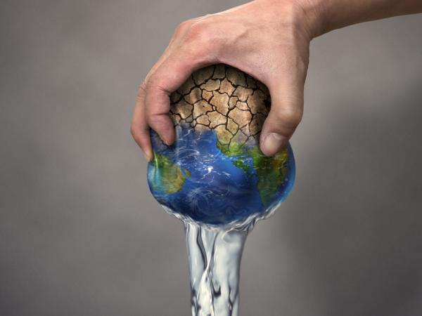
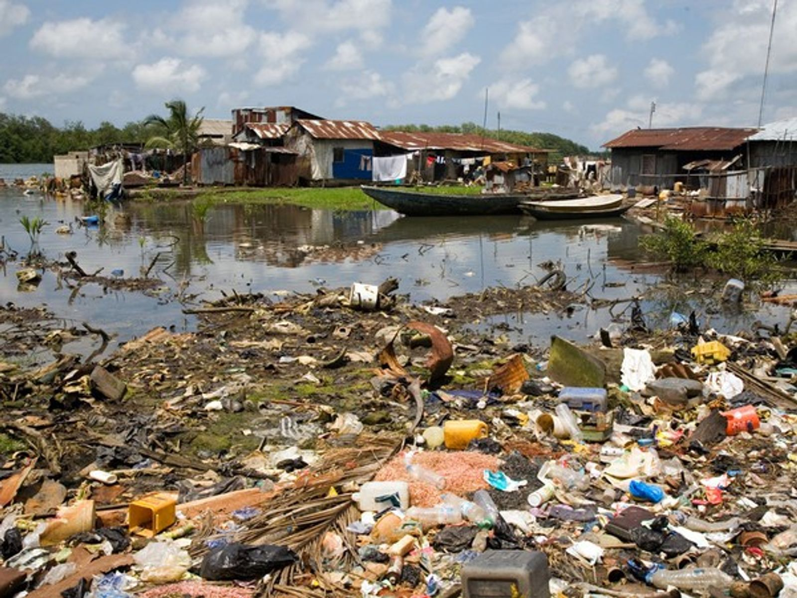
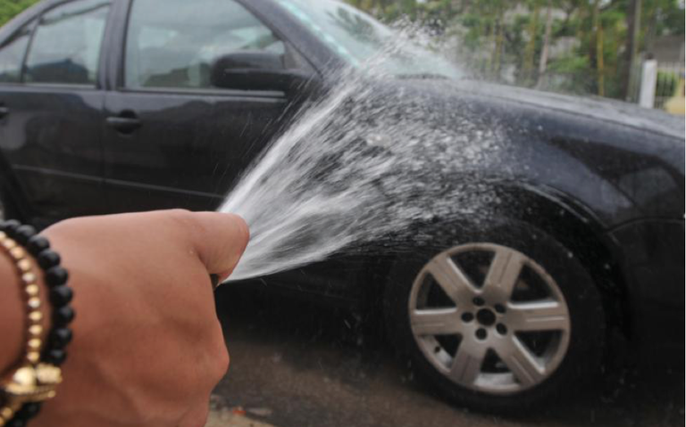
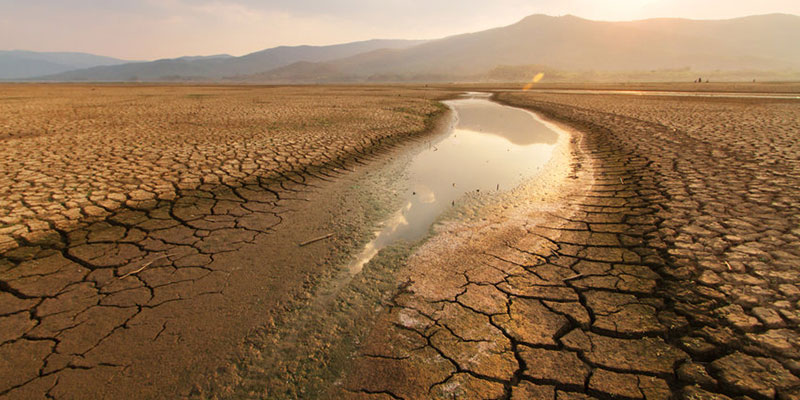

La escasez de agua es la condición en la cual la demanda de este recurso, en todos los sectores, incluyendo el del medio ambiente, no puede ser satisfecha debido al impacto del uso del agua en el suministro o en la calidad del recurso. La escasez de agua puede empeorar a causa del cambio climático, especialmente en zonas áridas y semiáridas, que ya de por sí presentan estrés hídrico. Así, la protección de los recursos de agua dulce mundiales requiere que el impacto de origen humano sobre el medio ambiente y el clima sea abordado de manera integrada. El problema de la escasez de agua afecta a alrededor de 2800 millones de personas en todos los continentes del mundo durante al menos un mes cada año. Más de 1300 millones de personas no tienen acceso a agua potable salubre.
La degradación de la calidad del agua contribuye a la escasez de este recurso. Este es un aspecto importante en el manejo de los recursos hídricos, el cual ha sido tratado con negligencia. La mala calidad del agua tiene múltiples consecuencias para la salud y el medio ambiente, que vuelven al recurso no apto para su uso, dando como resultado la reducción en la disponibilidad de recursos hídricos. En efecto, la contaminación del agua ha devenido en una de las grandes amenazas para la disponibilidad y reúso del agua dulce. La acelerada urbanización, el incremento en las actividades agrícolas, el uso de fertilizantes y plaguicidas, la degradación del suelo, las altas concentraciones de población y la deficiente eliminación de desechos afectan la disponibilidad de los recursos de agua dulce.
Uno de los principales causantes de la escasez de este recurso tan preciado es sin duda la contaminación. Los vertidos de productos perjudiciales al agua, los humos generados por las fábricas al condensarse, el uso incontrolado de vehículos o el uso de productos como espray u otros aerosoles son los principales factores de contaminación del agua.
Este segundo factor es uno de los más importantes, ya que puede cambiarse de forma directa. El problema reside en que las grandes fábricas y empresas que utilizan el agua como recurso principal de sus productos, gastan agua descontroladamente sin tener en cuenta el futuro. En una menor medida, las empresas y factorías pequeñas, así como los particulares hacen un uso indebido de agua diariamente.
Debido al cambio climático, se produce un fenómeno conocido como sequía. La sequía es una falta de agua por un tiempo largo y prolongado que provoca escasez de agua y aridez en los cultivos. Lamentablemente, este aspecto fruto de la contaminación sumado a un sobregasto de energía está acabando con los recursos hídricos del planeta y aumentando su temperatura.
Este es sin duda alguna, la consecuencia más peligrosa en cuanto a la vida se refiere. La falta de agua trae consigo una gran fuente de enfermedades tanto para los animales cómo para las plantas y el ser humano. La falta de agua propicia el desarrollo de enfermedades, ya que se debilitan las defensas del organismo.
Parece contradictorio, pero es la pura realidad. La falta de agua debilita a las plantas que la necesitan para realizar sus funciones vitales. Si no existe una cantidad de agua suficiente como para mantener el riego de las plantas estas se debilitarán y acabarán muriendo, eliminando una de la fuente de alimentos más importantes y provocando así el fenómeno al que comúnmente llamamos “hambre por falta de agua”.
El agua es el recurso renovable utilizado para la limpieza diaria y la falta de ella no permite la correcta eliminación de bacterias y suciedad que acumulan los seres humanos. La no limpieza continuada puede llegar a afectar muy negativamente al cuerpo, provocando graves enfermedades por insalubridad.
Por último, queremos hablar de una de las consecuencias más catastróficas de todas. Sin duda se trata de la muerte de vegetales y de animales por falta de agua. Los vegetales necesitan una gran cantidad de agua para desarrollar sus funciones vitales y crecer y ante la falta de agua, estos serán más y más pequeños terminando por no adaptase a una mucho menor cantidad de agua y desapareciendo por completo.
Siempre que abras un grifo o vayas a usar el agua para cualquier cosa, bañarse en una piscina, en un río o lago limpio, en el mar… trata de pensar que tú eres uno de los afortunados en el mundo que dispones de acceso al agua y que debes hacer un uso sostenible de la misma y únicamente utilizar la necesaria.
El baño gasta 15 veces más de agua que la ducha.
Te lavas los dientes, te afeitas o te enjabonas las manos… y si lavas los platos a mano, usa barreños y no lo hagas con el grifo abierto. Por ejemplo, si nos lavamos los dientes con el grifo abierto gastamos alrededor de 6 litros, mientras que al abrirlo solo cuando lo necesitamos gastaremos menos de medio litro.
Cada vez que usamos la cisterna del inodoro gastamos entre 9 y 10 litros de agua…a veces, para arrastrar solo una colilla o un papelito. Pon una papelera en el baño y úsala.
Arregla las fugas de agua. Los grifos que gotean pueden llegar a gastar en un año 11.000 litros de año, fugas en la cisterna del inodoro pueden suponer más de 100 litros de agua al día.
Si tienes esta costumbre ya no lo hagas, actualmente todos los electrodomésticos pueden limpiar bien la vajilla sin necesidad de este prelavado manual.
Utilicemos la lavadora y el lavavajillas siempre llenos y si puedes dejar de usar la secadora, mejor, ahorrarás agua y electricidad. El consumo de agua en la colada suele ser el 20% de nuestro consumo total en el hogar. Por cierto, siempre que puedas, no utilices el programa de prelavado.
Llena una botella de agua y métela en la nevera, tendrás siempre agua fresca. No la dejes correr para conseguir agua fresquita.
Los reductores son dispositivos que se pueden incorporar a los grifos o la ducha e impiden que el caudal supere el límite fijado. Lo aconsejable para grifos son 8 litros por minuto y para ducha 10 litros/minuto. Los aireadores son dispositivos que permiten introducir aire en el chorro de agua, consiguiendo un ahorro del 40 o el 50%.
Trata de comprar aquellos que sean más eficientes energéticamente. Son inicialmente más caros, pero consumen menos energía y menos agua, con lo cual los costes se igualan a la larga. La eficiencia de los electrodomésticos está regulada por la Unión Europea en una calificación de la A a la G, siendo la A la más eficiente y la G la que señala a aquellos con peores prestaciones energéticas.
Hazlo por la noche. Al regar durante el día puedes perder hasta el 30% por la evaporación. Estas son algunas medidas que nos ayudarán sobre todo a cambiar hábitos y actitudes frente al uso que hacemos a diario del agua y que nos permitirán ahorrar en este recurso imprescindible. No solo nos estaremos acostumbrando a usar más eficiente y sosteniblemente un recurso como el agua, sino que además, ahorraremos dinero. Lo más importante es que seamos de verdad conscientes de nuestro papel como consumidores, pero también a la hora de exigir medidas eficaces y realistas que comienzan desde nuestra comunidad de vecinos a nuestros respectivos gobiernos en los ámbitos local, regional o nacional.